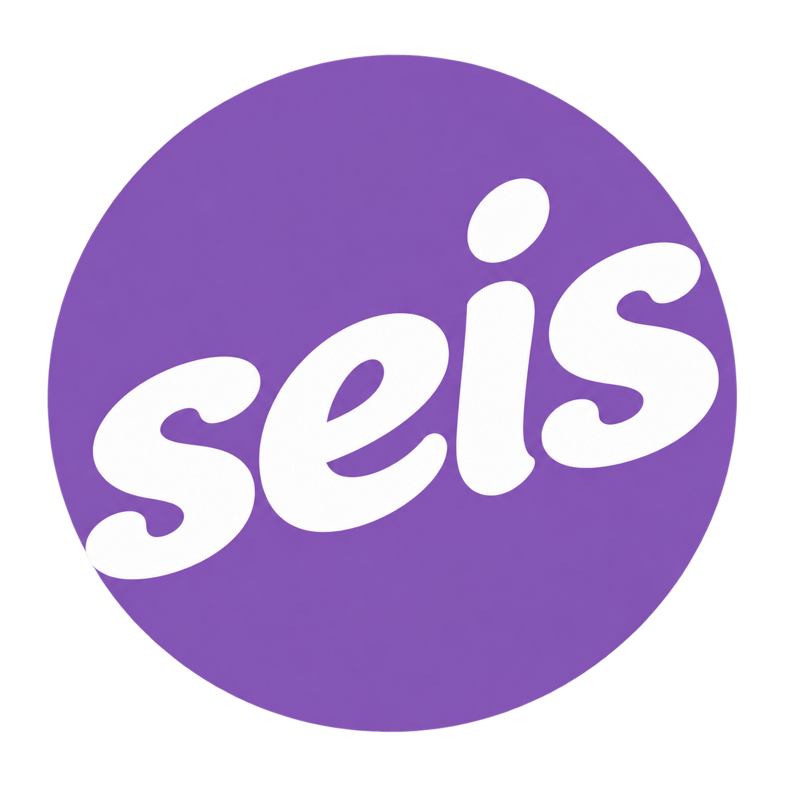
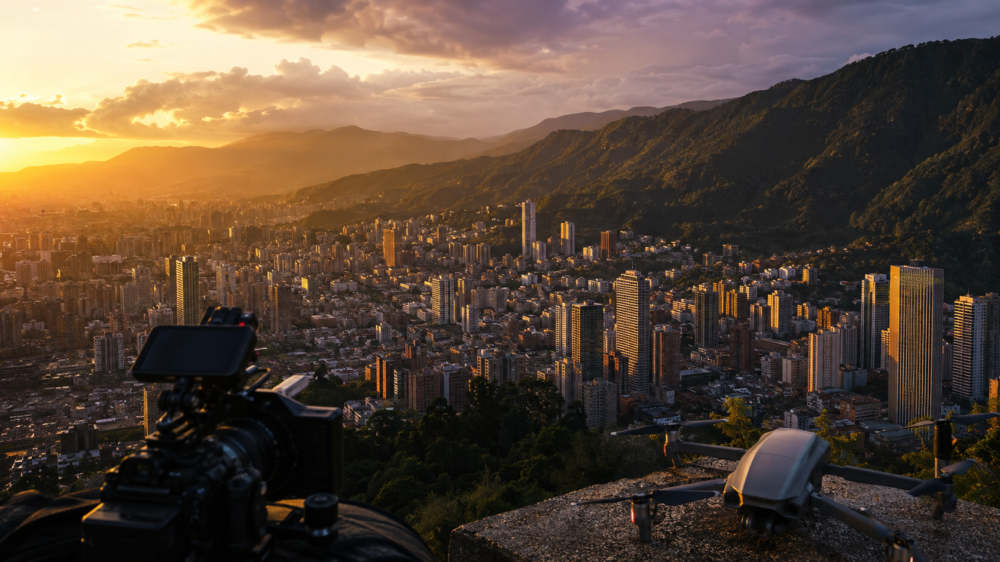

Microdocumentales
Historias humanas y de marca contadas con una mirada cercana, auténtica y cinematográfica.

SEISVIDEO · MICRODOCUMENTALES · DRON
Creamos piezas audiovisuales para marcas y profesionales que tienen algo verdadero que contar.
LO QUE HACEMOS
Combinamos narrativa, realización y perspectiva aérea para convertir proyectos en imágenes con intención.
Historias humanas y de marca contadas con una mirada cercana, auténtica y cinematográfica.
Contenido vertical para presentar tu trabajo y conectar con tu audiencia.
Tomas aéreas profesionales para proyectos inmobiliarios, marcas, turismo, eventos y producciones audiovisuales.

NUESTRO ENFOQUE
Nosotros encontramos desde dónde contarla: una decisión visual, un gesto real, el ritmo preciso y una perspectiva que abre la escena.
Explorar el trabajo en Instagram ↗SEIS TALLER CREATIVO
Somos un taller creativo dedicado a transformar ideas, oficios y proyectos en relatos audiovisuales.
Trabajamos con marcas y profesionales desde Bucaramanga y su área metropolitana, uniendo video, reels y tomas con dron en una narrativa visual clara y honesta.
UNA MIRADA PARA CADA PROYECTO
¿TIENES ALGO QUE CONTAR?